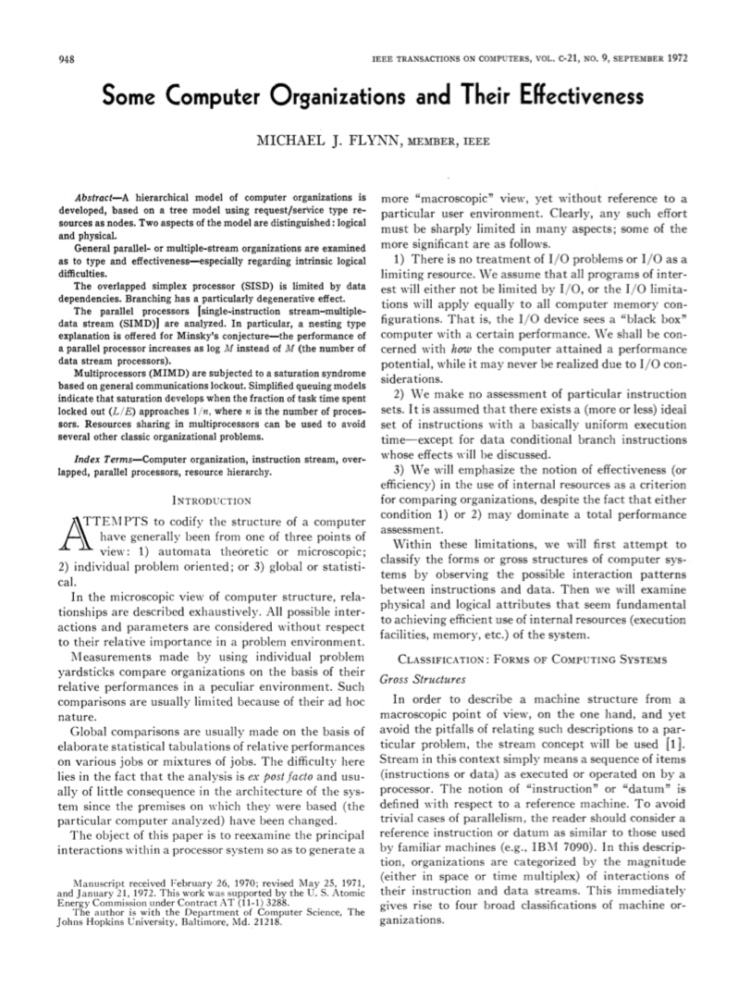
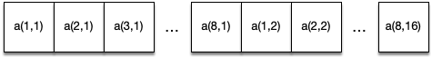
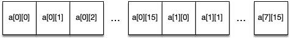
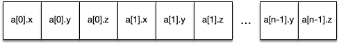
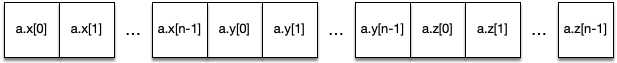
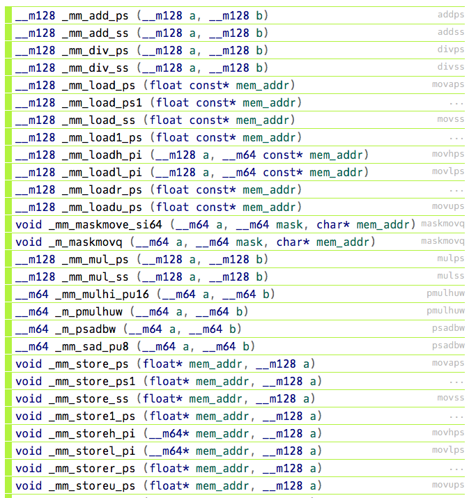
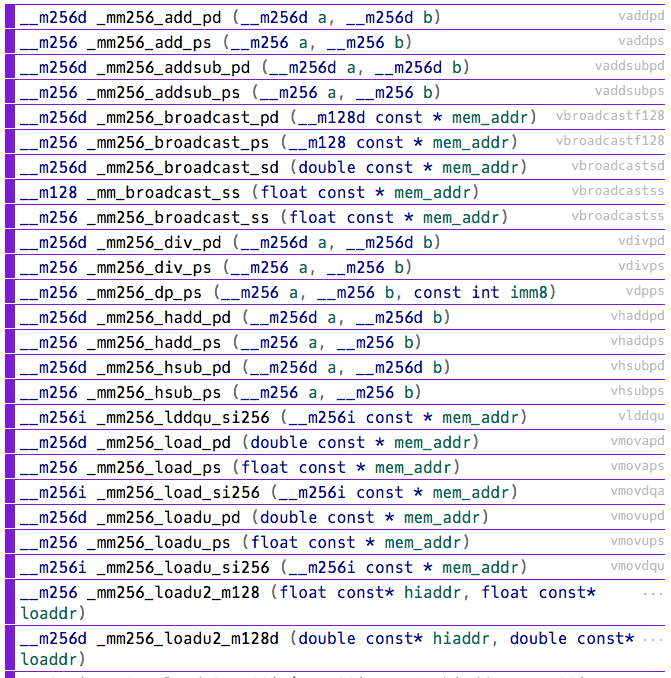

4. On-core Parallelism
Overview
Over the next few units we’re going to be looking at how to develop applications for homogeneous distributed systems. In this unit, we’re going to start with performance and parallelism at the core level.
Specifically we’re going to cover:
- Some really simple optimisations
- Some slightly less obvious optimisations
- Optimising iterative code (loops)
- Writing vectorised code
- Having the compiler write vectorised code
Flynn’s Taxonomy

Figure 1: Some Computer Organizations and Their Effectiveness
In Unit 1, we briefly covered Flynn’s taxonomy. In Flynn’s 1972 IEEE Transactions on Computers paper, “Some Computer Organizations and Their Effectiveness”, he defined four classifications for compute architectures based on the number of concurrent instruction streams and data streams that were available in hardware (see Figure 2).

Figure 2: Flynn’s taxonomy
Almost all modern CPUs are based on a MIMD architecture, where each core or thread is able to act independently. Within these CPUs, individual cores are typically capable of operating in a SIMD fashion – using vector instruction sets such as SSE (Streaming SIMD Extensions), AVX (Advanced Vector eXtensions), or SVE (Scalable Vector Extensions).
In this unit we’ll explore how we can use these SIMD instruction sets to enable instruction-level parallelism in our applications.
Simple Optimisations
Before we begin exploring the potential for parallelising our application, we’re first going to cover some simple optimisations that may improve performance, and simplify the process of parallelisation later.
In some cases, a compiler may perform some of these optimisations for you. However, the easier we make the work of the compiler, the better. And regardless, it’s good to understand the kinds of things that may be going on “under the hood”.
Do Less Work
Perhaps the simplest way to improve the performance of any application is to do less. This could be by rearranging code such that we can do less work, or it could be by removing functionality that does not materially affect the execution.
Take this simple loop for example,
int flag = 0;
for (int i = 0; i < num_items; i++) {
if (items[i] < threshold) flag = 1;
}
The code is checking to see if any of the items in a list have a value below a threshold, and if they do it sets a flag to indicate this. In the event that item[0] is below the threshold, the code will continue to check further values, despite this having no further effect on the application. Thus, the code could be rewritten with a break statement, to enable an early exit from the loop.
int flag = 0;
for (int i = 0; i < num_items; i++) {
if (items[i] < threshold) {
flag = 1;
break;
}
}
Another example of “doing less work” can often be found in how we use temporary array storage. For example,
double *temp_array = (double *) calloc(1024, sizeof(double));
for (int i = 0; i < 1024; i++) {
temp_array[i] = <some calculation>;
}
// <do some work with temp_array>
for (int i = 0; i < 1024; i++) {
temp_array[i] = 0.0; // zero the array, before next use
}
for (int i = 0; i < 1024; i++) {
temp_array[i] = <some calculation>;
}
In the code above, there are numerous opportunities to do less. In the first instance, we could use a malloc() operation, since the values in the array will be overwritten before being used (so starting everything at zero is not necessary). In the second instance, we do not need to zero the array between calculations, since the third loop overwrites the value instead of updating it.
The important thing to look out for is whether a particular unit of work is necessary for the application – any opportunities to do less will save resources (except in some very strange circumstances!).
Avoid Expensive Operations
Some instructions are intrinsically more expensive than other instructions, e.g., the trigonometric functions and exponentiation. When these expensive operations are used in a loop, they may have a significant impact on performance.
Take the following code, for example, calculating the standard deviation of an array of values,
double sum = 0.0;
for (int i = 0; i < num_items; i++) {
sum += pow(items[i] - mean, 2.0);
}
double stdev = sqrt(sum / num_items);
While this may seem like a reasonably efficient implementation, the pow(a,b) function may actually perform exp(b*log(a)). Instead, it is likely more efficient to write out the squaring directly, i.e., (items[i] - mean) * (items[i] - mean).
Another example is provided in the Introduction to High Performance Computing textbook, taken from a simulation code for non-equilibrium spin systems.
int iL, iR, iU, iO, iS, iN;
double edelz, tt;
...
<loop kernel> {
edelz = iL + iR + iU + iO + iS + iN;
BF = 0.5 * (1.0 + tanh(edelz/tt));
}
The integer values each store spin orientations (and are therefore all -1 or +1), and so the edelz variable can only take on values from -6 to +6. Using this knowledge (and the assumption that tt is not changing in the loop body), we can calculate a lookup table for the values of the tanh() function, such that we only have to call the function 13 times (rather than for every loop iteration). For example,
int iL, iR, iU, iO, iS, iN;
double tt;
double tanh_table[13];
...
for (int i = 0; i < 13; i++) { // do this once
tanh_table[i] = 0.5 * (1.0 + tanh((i-6) / tt));
}
...
<loop kernel> {
edelz = iL + iR + iU + iO + iS + iN;
BF = tanh_table[edelz + 6]; // add 6 to edelz to account for range from -6 to 6
}
The cost of calculating the lookup table is minimal, and the size of the resulting table is small, such that it will easily fit in L1 cache.
Shrink The Working Set
The working set of an application is the amount of memory it uses. Generally, if we can reduce the amount of memory an application uses, we can likely improve its performance by raising the probability of cache hits. One simple way to do this is to consider the storage required for each variable.
In the example above, double precision is used for the floating-point values, meaning that each value occupies 8 bytes (64 bits). If this level of precision is not required, we could replace double with float and reduce our working set by a half. This may also be advantageous since single-precision calculations are usually cheaper than double-precision ones!
The important thing to consider is what precision is required, and whether switching precision will change any other properties of your application (e.g. will it affect convergence of a calculation?).
Further Reading
- Introduction to High Performance Computing for Scientists and Engineers, Section 2.2 Common Sense Optimizations
More Simple Optimisations
So, we’ve covered some common sense general optimisations. Now we’ll look at some more simple optimisations that can have a large impact on performance. Many of these optimisations may be performed by your compiler already – but again, the easier we make it for the compiler, the better.
Eliminate Common Subexpressions
Subexpression elimination is a common compiler optimisation. In a loop where there is a common expression in each iteration, we can typically calculate the subexpression outside of the loop to a temporary variable, and then use this variable within the loop to reduce duplicated computation. For example,
for (int i = 0; i < num_items; i++) {
a[i] = a[i] + s + r * sin(x);
}
… becomes…
double tmp = s + r * sin(x);
for (int i = 0; i < num_items; i++) {
a[i] += tmp;
}
This form of optimisation is also sometimes called loop invariant code motion.
Avoid Branches
Loops are one of the easiest places for compilers to find opportunities for optimisation. However, it is difficult for a compiler to optimise a loop body that contains branching instructions. Take the following code:
for (int i = 0; i < i_max; i++) {
for (int j = 0; j < j_max; j++) {
if (i > j) sign = 1.0;
else if (j > i) sign = -1.0;
else sign = 0.0;
c[j] = c[j] + sign * a[i][j] * b[i];
}
}
For each iteration of the inner loop, a branch prediction algorithm will try to guess the most likely outcome of the test, and will start to evaluate the result. Should the prediction prove incorrect (i.e. a branch miss), the pipeline will need to be flushed, losing many cycles. Furthermore, the compiler is unlikely to perform advanced optimisations on the loop. Luckily, we can rewrite the code to avoid the branching logic.
for (int i = 0; i < i_max; i++) {
for (int j = i+1; j < j_max; j++) {
c[j] = c[j] + a[i][j] * b[i];
}
}
for (int i = 0; i < i_max; i++) {
for (int j = 0; j < i-1; j++) {
c[j] = c[j] - a[i][j] * b[i];
}
}
In this restructured code, the branching statements have effectively been removed by splitting the loop in two and adding the required logic to the inner loop bounds. There is much more optimisation potential in this code than the former example.
Multidimensional Array Storage
Before we dive further into more loop optimisation techniques, let’s briefly look at memory management and data accesses. The two(/three) major languages of HPC are Fortran and C/C++, and both differ in how they allocate memory for multidimensional arrays. Before we start trying to optimise looping constructs, we should first look at how their approaches to multidimensional arrays differ.
Row-major vs Column-major Order
In Fortran, a multidimensional dynamic array is declared with the ALLOCATABLE keyword, and the dynamic dimensions specified with a colon (:). For example,
REAL, DIMENSION(:, :), ALLOCATABLE :: a
...
ALLOCATE(a(8, 16))
The allocate statement will allocate a contiguous block of memory with space for 128 “reals” (i.e. 8 × 16). In Fortran, arrays are indexed in column-major order; in other words, the allocated memory will look like Figure 3 (Note: arrays in Fortran begin at 1 unless told otherwise, and arrays are accessed using this bracket notation).

Figure 3: Column-major ordering in Fortran
In C/C++, it is not strictly possible to allocate a dynamic multidimensional array that can be accessed using the standard bracket notation, but we can allocate a 2D array statically like so:
double a[8][16];
We would then be able to access the elements of this array using the standard C bracket notation. However, in contrast to Fortran, the data will be stored in row-major order. Figure 4 demonstrates this.

Figure 4: Row-major ordering in C/C++
While this may seem like a minor difference, this has implications for performance when looping over a 2D (or higher dimension) array. It seems natural to write your array loops such that the outer loop iterates over the first dimension, while the inner loop iterates over the second. In a C/C++ code, this will effectively stream through the data in order, making maximum use of the cache.
for (int i = 0; i < 8; i++) {
for (int j = 0; j < 16; j++) {
a[i][j] = ...;
}
}
But if we were to use the same looping structure on the Fortran code, each data read would be a strided access.
do i=1,8
do j=1,16
a(i,j) = ...
enddo
enddo
First, this code would update the value in the first memory location (1,1), but the second access (1,2) would at be the 9th location in memory (i.e. a stride of 8 reals). This would make ineffective use of the cache. While this may seem inconsequential, in code that is converted straight from Fortran to C, it is possible that any looping structures are written assuming column-major access. Swapping the inner and outer loop statements can have a significant effect on performance. This is called loop interchange.
Multidimensional Arrays in C
As mentioned above, dynamically allocated multidimensional arrays in C/C++ are… difficult. There are multiple approaches for dealing with this, and each comes with performance considerations.
First, we could use a double pointer and allocate the outer array, and then allocate the inner arrays, like so:
double **my_array;
my_array = (double *) malloc(sizeof(double *) * rows);
for (int i = 0; i < rows; i++) {
my_array[i] = malloc(sizeof(double) * cols);
}
my_array[x][y] = ...;
This will provide us with an n × m array that we can index using square brackets. However, each row is its own allocation and therefore the rows are not stored contiguously in memory.
Another approach that is often used, is to store a 2D/3D/etc. array in a 1D array and then calculate offsets manually or using a macro. For example,
double *my_array = (double *) malloc(sizeof(double) * rows * cols);
...
my_array[x * cols + y] = ...;
This approach has the advantage of contiguous storage, but also increases programmer effort, by requiring manual dereferencing. The use of C pre-processor macros can tidy up this example considerably.
#define MY_ARRAY_MACRO(i, j) (my_array[(j) * WIDTH + (i)])
...
MY_ARRAY_MACRO(x, y) = ...;
In this example, the C pre-processor will expand the macro during compilation; essentially replacing MY_ARRAY_MACRO(...) with my_array[...].
There are a number of other approaches to dynamic multidimensional arrays in C/C++ (and you’ll notice one is used in the HIPC assessment later in the course).
In HPC applications, locality of access is important, so approaches that keep memory contiguous are likely to outperform any other approach considerably.
Further Reading
- How to dynamically allocate a 2D array in C?
- std::mdspan, a proposal for the C++23 standard
Array-of-Structs vs Struct-of-Arrays
The final topic we’ll cover before looking at loop optimisation techniques, is how we store multiple properties about each item in an array. This is often referred to as the array-of-structures vs structure-of-arrays problem.
First, let’s consider an example where we are storing a collection of particles in 3D space. For each particle, we need to store an x-, y- and z-dimension. We can do this in C using a struct and then we can store an array of these structs.
typedef struct {
double x;
double y;
double z;
} particle_t;
particle_t my_particles[1000];
my_particles[0].x = ...;
my_particles[0].y = ...;
...
This is perhaps the most intuitive way to store our 1000 particles. But, if we look at how this is stored in memory, it might not be conducive to performance.

Figure 5: An array-of-structures
Although storing all of the values contiguously may seem like the most performant approach, this approach will force the application to use only a single cache line. If we were to store the x, y, and z values in separated arrays, we would be able to use three cache lines simultaneously (making much more efficient use of the cache, and thus improving performance).
typedef struct {
double x[1000];
double y[1000];
double z[1000];
} particles_t;
particles_t my_particles;
my_particles.x[0] = ...;
my_particles.y[0] = ...;
...

Figure 6: A structure-of-arrays
As we will see later in this unit, when we start making use of vector instructions, an SoA approach is much more effective at using SIMD registers than an AoS approach, but comes at the expense of readability. A hybrid approach (array-of-structures-of-arrays, or AoSoA) is also an option and provides greater control over the size of memory requests (since we can set the stride to be equal to the cache line width).
Further Reading
- AoS and SoA, Wikipedia
Loop Optimisations
The biggest source of performance gains in scientific software is usually contained within loop constructs. Before we look at how we can parallelise loop iterations with vectorisation, we’re going to cover three simple loop transformation techniques.
Loop Unrolling
The first technique we are going to look at is perhaps the most important for hand-vectorising code – loop unrolling. As the name suggests, this is where we manually unroll loop iterations by some factor (the unrolling factor). Let’s start with a simple vector addition kernel:
for (int i = 0; i < N; i++) {
c[i] = a[i] + b[i];
}
In this code we’re simply adding successive elements of a to b and storing the result in c. Unrolling this loop by a factor of 4 would mean copying the body of the loop 3 times and increasing the loop step function to account for the now much larger steps. In other words, each new iteration would do the work of 4 iterations in the previous example.
for (int i = 0; i < N; i += 4) { // the loop now steps forward 4 at a time.
c[i] = a[i] + b[i];
c[i+1] = a[i+1] + b[i+1];
c[i+2] = a[i+2] + b[i+2];
c[i+3] = a[i+3] + b[i+3];
}
Ah! But what if N (our vector sizes in this example) is not divisible by 4? Well, then we need two loops. One that we can unroll (i.e. one that performs all of the fully unrollable loops up to N), and one that cleans up the rest (i.e. performs the final few loops to get us to N).
int i = 0;
for (i = 0; i+4-1 < N; i += 4) {
c[i] = a[i] + b[i];
c[i+1] = a[i+1] + b[i+1];
c[i+2] = a[i+2] + b[i+2];
c[i+3] = a[i+3] + b[i+3];
}
for ( ; i < N; i++) { // clean up the remaining iterations
c[i] = a[i] + b[i];
}
Now, at this point you might (quite reasonably) wonder what this buys us. Well,
- It reduces the loop overhead (i.e. time spent evaluating the loop condition, incrementing the counter) by a factor of 4 (or k, where k is the unrolling factor), though this overhead is likely minimal.
- The instructions in the loop body may benefit from better scheduling to reduce cycle stalls (see video below).
- The loop body may now be implementable using vector instructions (see the next section).
Loop unrolling is an optimisation technique found in all modern compilers. Where it is likely to be beneficial to runtime, it is almost always performed transparently – nonetheless it is useful to understand what might be going on beneath the surface.
Loop Fusion
The next two techniques are the inverse of one another. Loop fusion is an optimisation technique where we fuse multiple loops over the same index range into a single loop. For example,
double a[100];
double b[100];
for (int i = 0; i < 100; i++) {
a[i] = i;
}
for (int i = 0; i < 100; i++) {
b[i] = i*2;
}
We could fuse these two loops into a single loop, like so,
double a[100];
double b[100];
for (int i = 0; i < 100; i++) {
a[i] = i;
b[i] = i*2;
}
The potential advantages of loop fusion are:
- A reduction in loop overheads (i.e. less loop guard checks, increment instructions).
- A larger loop body may contain more opportunities for instruction level parallelism.
- We may be able to reduce temporary allocations.
- If the same array is used in multiple loops, we would only need to stream through the array once.
However, these advantages may come at a cost:
- A larger loop body is likely to increase the pressure on CPU registers.
Loop Fission
Loop fission is the opposite of fusion, where instead we break a single loop into multiple loops over the same index range, with each loop only computing a part of the original loop’s body. Essentially doing the transformation above in reverse.
This may have the following advantages:
- We may be able to improve locality of reference in a small loop body.
- It may decrease the pressure on register allocations.
- It can enable opportunities for loop interchange.
- It may increase the potential for loop pipelining and vectorisation.
With Loop Fusion and Loop Fission, there is a complex trade-off between data locality, ILP, and loop overheads that can make fission, fusion, or neither the preferred optimisation.
Further Reading
- Introduction to High Performance Computing for Scientists and Engineers, Section 3.5 Algorithm classification and access optimizations
Vector Instruction Sets
The vector processors found in many early supercomputers (and in particular, Cray systems) could be considered an implementation of the SIMD paradigm from Flynn’s taxonomy. Special vector registers would hold multiple values that could have the same operation performed to them simultaneously.
The first SIMD instruction set widely deployed on modern commodity hardware was Intel’s MMX extensions to the x86 architecture in 1996. The MMX extensions used eight 64-bit processor registers, named MM0-MM7, and contained instructions that could operate on one 64-bit integer, two packed 32-bit integers, four packed 16-bit integers, or eight packed 8-bit integers at once.
The Streaming SIMD Extensions
In 1999, Intel introduced the Streaming SIMD Extensions (SSE) instruction set – extending SIMD to 128-bit registers (named XMM0-XMM15) and floating-point operations. In the first release, SSE could operate on four 32-bit single-precision floating-point numbers. This was extended in SSE2 to two 64-bit double-precision floating-point numbers, two 64-bit integers, four 32-bit integers, eight 16-bit integers, or sixteen 8-bit integers.
The SSE instruction set was further extended to SSE3, SSE4, SSE4.1, and SSE4.2. In total there are approximately 300 vector instructions across the SSE instruction sets.

Figure 7: A small selection of SSE instructions taken the Intel Intrinsics Guide
A note on memory alignment
The natural alignment of any memory access is the size of the memory access – accessing an 8-byte double-precision value requires the access to be aligned to an 8-byte boundary. Ensuring that memory accesses are properly aligned in this way means that accesses do not cross cache lines. If we consider a memory access that is not correctly aligned (e.g. an 8-byte access on an address that is only 4-byte aligned), it would require loading 2 cache lines, essentially halving performance. For most SSE instructions, it is a requirement that we use aligned memory operands (unless the instruction says otherwise).
When memory is allocated in C (using
malloc()), there is no guarantee of alignment, and so alternativemalloc()andfree()functions are provided by Intel’s intrinsics header file. The provided_mm_malloc()function takes an additional argument to specify the byte alignment required. When using SSE intrinsics, we can replace ourmalloc()calls with calls to_mm_malloc()to ensure our memory accesses are correctly aligned to the size of cache lines (usually 64 bytes). In the following example, the two allocation are identical, except that the second allocation is guaranteed to be aligned.float * my_data = malloc(sizeof(float) * 1024); #include <immintrin.h> // include intrinsics header file float * my_aligned_data = _mm_malloc(sizeof(float) * 1024, 64); // align our malloc to 64 bytesSee: Memory alignment requirements for SSE and AVX instructions
With all of this in mind, let’s explore SSE with a simple vector-add example:
float * a = malloc(sizeof(float) * N);
float * b = malloc(sizeof(float) * N);
float * c = malloc(sizeof(float) * N);
... // fill a and b with values
for (int i = 0; i < N; i++) {
c[i] = a[i] + b[i];
}
free(a);
free(b);
free(c);
As we can see in the video above, in order to manually apply vectorisation instructions to our vector-add example, we have to:
- Align our memory by replacing the
malloc()calls with_mm_malloc()calls, and thefree()calls with calls to_mm_free(). - Unroll our loop by a factor of 4 (since we’re using 128-bit registers and 32-bit floats).
- Replace our loop logic with two vector loads, a vector add, and a vector store instruction.
In our very simple example, this results in a 1.5× boost in performance. While this is much more modest than the 4× speed-up we might hope for, such a simple (FLOP-light!) kernel is clearly going to be heavily memory-bound.
Advanced Vector eXtensions (AVX)
Advanced Vector eXtensions were introduced in March 2008, and first supported by Intel’s Sandy Bridge processors. AVX provides sixteen vector registers that are 256-bits wide (renamed to YMM0-YMM15) and can therefore operate on four 64-bit packed double-precision values, eight 32-bit packed single-precision values, etc.
AVX was extended in 2013 with the AVX2 instruction set, and extended once again in 2013 for the Intel Xeon Phi Knights Landing processor with AVX-512 (with 512-bit wide vector registers). Although introduced for the Intel Xeon Phi range of co-processors, AVX-512 has been available on some modern Intel CPUs since 2017’s Skylake platform.

Figure 8: A small selection of AVX instructions taken the Intel Intrinsics Guide
Many AVX instructions are 256-bit extensions of the legacy 128-bit SSE instructions, however there are a number of important new instructions in AVX. These additional instructions (such as broadcasts, masks, and permutations) can allow us to more easily express complex mathematical operations in AVX.
Further Reading
- Advanced Vector Extensions, Wikipedia
For now, let’s simply consider how we might change the vector-add example above for AVX.
- Since we’re now capable of handling 8 single-precision operations per second, we can unroll our loop by a factor of 8 instead of 4.
- We must now use 256-bit instructions rather than 128-bit ones.
And so, our hand-vectorised AVX code now looks like:
float * a = _mm_malloc(sizeof(float) * N, 64);
float * b = _mm_malloc(sizeof(float) * N, 64);
float * c = _mm_malloc(sizeof(float) * N, 64);
... // fill a and b with values
for (int i = 0; i < N; i+=8) { // unrolled by a factor of 8
__m256 a_v = _mm256_load_ps(a+i);
__m256 b_v = _mm256_load_ps(b+i);
__m256 c_v = _mm256_add_ps(a_v, b_v);
_mm256_store_ps(c+i, c_v);
}
_mm_free(a);
_mm_free(b);
_mm_free(c);
Clearly, hand-vectorising code has a significant impact on the readability (and writeability!) of our code. Luckily, an optimising compiler is usually capable of applying vectorisation to code, assuming there are no dependencies – this process is usually called auto-vectorisation, and we’re going to cover that next.
Further Reading
Compiler Optimisations
In this unit we’ve looked at how to optimise the execution of a single-core/single-threaded application through some simple optimisations, through to loop transformations, and vector instruction sets. As you might have noticed, as we optimise an application more and more, it is likely that the code becomes less and less readable. Luckily, compilers are able to perform many of the optimisations we’ve discussed above (and many more beyond that!).
Generally speaking, an optimising compiler can usually perform the following types of optimisation for us:
- Loop optimisations (fusion, fission, interchange, unrolling, etc.)
- Automatic parallelisation
- Data-flow optimisations (subexpression elimination, constant folding, etc.)
- Code generator optimisations (instruction selection, instruction scheduling, etc.)
- Dead code elimination
- Function inlining
- etc.
Optimisation Level
We can control many of the types of optimisation through compiler flags – flags specified on the command line at compile time. For example, if we wanted to inline small functions (functions where the body of the call is smaller than the expected function call code), we could include the -finline-small-functions compiler flag to our command line.
But usually we don’t want to write out a exhaustive list of compiler options, and so instead we choose to specify an optimisation level that turns on a particular subset of optimisation flags for us.
We will not list all of the optimisation levels and what options are enabled here, but on GCC we can specify an optimisation level from -O0 (disable all optimisations) through to -O3 (turn on all optimisations that are strict standards compliant). There are some additional optimisation flags that can be specified that may disregard strict standards compliance (-Ofast), or optimise a binary for size (-Os and -Oz).
Further Reading
- 3.12 Options That Control Optimization, GCC Optimisation Options
In general, Clang tries to copy the command line options of GCC, and so many of the same options are available in Clang/LLVM. However, the options enabled by each of the optimisation levels may differ slightly between the two compilers. Code compiled with -O2 by Clang may not have the same optimisations applied as an equivalent compiled by GCC.
Specifying The Target
The next set of compiler options we will look at are those that specify our target architecture. As we’ve seen in this unit, there are many extensions to the x86(_64) instruction set, and different CPU models support different subsets of these extensions. While the compiler may be very sufficient at identifying vectorisable code, it will only be able to generate appropriate vector instructions if it knows that the CPU supports these instructions.
We can specify our target architecture to GCC and Clang using the -march= compiler flag. Again, we’ll not cover the complete list of architectures here, but we’ll look at a few specific examples.
Perhaps the simplest option is to use the -march=native option, which will allow GCC to determine the processor type at compilation time and tune for its specific instruction subsets.
Alternatively, we can specify specific architectures such as -march=cascadelake (for an Intel Cascade Lake processor), or -march=znver3 (for an AMD Zen 3 processor).
We can also use the -mtune= compiler flag to allow the compiler to tune an application for a specific CPU, but still generate instructions that will run on a generic x86 processor.
Further Reading
- 3.20.54 x86 Options, GCC list of x86 options
- 3.20 Machine-Dependent Options, GCC list of Submodel options
Optimisation Reports
Now that we know how to make the compiler do most of the work for us, we might reasonably want to know exactly what the compiler has done. For this purpose, we can enable optimisation reports.
GCC and Clang provide a wide range of optionality to their optimisation reports. We can ask for a complete report, or we can have a report that focuses on particular optimisations.
In GCC, we can control optimisation reports through the -fopt-info command line flags.
For Clang, we use the -Rpass (when a pass makes a transformation), -Rpass-missed (when a pass fails to make a transformation) and -Rpass-analysis (when a pass determines whether or not to make a transformation) flags.
Further Reading
- 3.19 GCC Developer Options, GCC Developer options
- Options to Emit Optimization Reports, Clang optimisation reports
Let’s revisit our vector-add example from earlier. If we compile this with GCC, -O3, and optimisation reports (-fopt-info-all), we should see something like the following (results may vary based on compiler version, architecture, etc.):
$ gcc -fopt-info-all -O3 -o vec_acc vec_add.c
vec_add.c:29:5: missed: not inlinable: main/10 -> free/14, function body not available
vec_add.c:28:5: missed: not inlinable: main/10 -> free/14, function body not available
vec_add.c:27:5: missed: not inlinable: main/10 -> free/14, function body not available
vec_add.c:25:5: missed: not inlinable: main/10 -> printf/13, function body not available
vec_add.c:24:15: missed: not inlinable: main/10 -> rand/12, function body not available
vec_add.c:16:24: missed: not inlinable: main/10 -> rand/12, function body not available
vec_add.c:15:24: missed: not inlinable: main/10 -> rand/12, function body not available
vec_add.c:10:16: missed: not inlinable: main/10 -> malloc/11, function body not available
vec_add.c:9:16: missed: not inlinable: main/10 -> malloc/11, function body not available
vec_add.c:8:16: missed: not inlinable: main/10 -> malloc/11, function body not available
Unit growth for small function inlining: 55->55 (0%)
Inlined 0 calls, eliminated 0 functions
vec_add.c:20:19: optimized: loop vectorized using 16 byte vectors
vec_add.c:14:19: missed: couldn't vectorize loop
vec_add.c:15:24: missed: statement clobbers memory: _1 = rand ();
vec_add.c:5:5: note: vectorized 1 loops in function.
vec_add.c:15:24: missed: statement clobbers memory: _1 = rand ();
vec_add.c:8:16: missed: statement clobbers memory: a_31 = malloc (40000000);
vec_add.c:9:16: missed: statement clobbers memory: b_33 = malloc (40000000);
vec_add.c:10:16: missed: statement clobbers memory: c_35 = malloc (40000000);
vec_add.c:15:24: missed: statement clobbers memory: _1 = rand ();
vec_add.c:16:24: missed: statement clobbers memory: _7 = rand ();
vec_add.c:24:15: missed: statement clobbers memory: _19 = rand ();
vec_add.c:25:5: missed: statement clobbers memory: printf (...);
vec_add.c:27:5: missed: statement clobbers memory: free (a_31);
vec_add.c:28:5: missed: statement clobbers memory: free (b_33);
vec_add.c:29:5: missed: statement clobbers memory: free (c_35);
vec_add.c:29:5: note: ***** Analysis failed with vector mode V4SF
vec_add.c:29:5: note: ***** Skipping vector mode V16QI, which would repeat the analysis for V4SF
The output here is very detailed about the various optimisations that have (or haven’t) been performed. But we perhaps only care about a few of these.
First, we can see that GCC is unable to inline the free, printf, rand and malloc instructions (which is probably expected!). Next, we can see that the main vector-add compute loop, which starts on line 20, has been vectorised using 16-byte vectors. This is exactly what we achieved previously by writing vector intrinsics!
Of course, this is a complete report of all optimisation stages in GCC, and so much of the information is likely not important. We can control the level of output by being more specific in what we request. For example, if we only wanted to know which statements have been successfully vectorised we could use -fopt-info-vec; to see missed optimisations from the vectorisation pass, we could use -fopt-info-vec-missed.
$ gcc -fopt-info-vec -O3 -o vec_acc vec_add.c
vec_add.c:20:19: optimized: loop vectorized using 16 byte vectors
$ gcc -fopt-info-vec-missed -O3 -o vec_acc vec_add.c
vec_add.c:14:19: missed: couldn't vectorize loop
vec_add.c:15:24: missed: statement clobbers memory: _1 = rand ();
vec_add.c:8:16: missed: statement clobbers memory: a_31 = malloc (40000000);
vec_add.c:9:16: missed: statement clobbers memory: b_33 = malloc (40000000);
vec_add.c:10:16: missed: statement clobbers memory: c_35 = malloc (40000000);
vec_add.c:15:24: missed: statement clobbers memory: _1 = rand ();
vec_add.c:16:24: missed: statement clobbers memory: _7 = rand ();
vec_add.c:24:15: missed: statement clobbers memory: _19 = rand ();
vec_add.c:25:5: missed: statement clobbers memory: printf (...);
vec_add.c:27:5: missed: statement clobbers memory: free (a_31);
vec_add.c:28:5: missed: statement clobbers memory: free (b_33);
vec_add.c:29:5: missed: statement clobbers memory: free (c_35);
In Clang, we must specify which optimisation pass we’re interested in (e.g. loop-vectorize, inline, licm [loop invariant code motion], etc.); though we can also use a regular expression (e.g. “-Rpass=.”).
So, let’s take our vector-add example once again and examine the successful and unsuccessful vectorisation passes:
$ clang -Rpass=loop-vectorize -O3 -o vec_acc vec_add.c
vec_add.c:20:5: remark: vectorized loop (vectorization width: 4, interleaved count: 4) [-Rpass=loop-vectorize]
for (i = 0; i < N; i++) {
^
$ clang -Rpass-missed=loop-vectorize -O3 -o vec_acc vec_add.c
vec_add.c:14:5: remark: loop not vectorized [-Rpass-missed=loop-vectorize]
for (i = 0; i < N; i++) {
^
Like with GCC before, Clang is able to successfully vectorise our main compute loop at line 20, but not our set-up loop (due to the function calls to rand() in the set-up loop’s body).
Hopefully it is obvious that optimisation reports are a vital tool in the arsenal of a performance engineer.
Help! My Code Won’t Vectorise
OK, so you’ve written the most wonderful code but its just not performing how you expect. You decide to generate an optimisation report, and it seems your code isn’t being vectorised!
The first thing to check is whether there are any loop dependencies. For example,
array[0] = 1;
for (int i = 1; i < N; i++) {
array[i] = array[i-1] * 2;
}
In this simple example, each iteration of the loop depends on a value that is updated in the previous iteration. In such a case, it may be impossible to vectorise this loop. However, do not despair! It may be the case that the logic of a loop can be rewritten to remove the dependency, or it may be possible to write your own vectorised code using intrinsics (i.e. we could precompute the first 4 values, and then step through this loop in blocks of 4 using our own vector logic).
The next things to look for are inner loop function calls which may prevent vectorisation.
In the vector-add example above, the call to the rand() function could not be inlined or vectorised and therefore the loop could not be vectorised safely. But many other simple functions may not have this issue. You may be able to take steps such as manually inlining a function, rewriting the loop logic to remove function calls, annotating a functions call to include the inline keyword, etc.
The final issue we’ll deal with here is related to our first example – loop dependencies. Compilers will generally attempt to vectorise your code if, and only if, (i) it believes the performance increase is worth it (evaluated at compile time using a cost-model) and (ii) it believes that there are no loop dependencies. In some applications, this latter concern is difficult to evaluate, and so compilers will always “play it safe”, treating assumed dependencies as proven dependencies.
Take the following code, for example,
void vec_dep(int *a, int k, int c, int m) {
for (int i = 0; i < m; i++)
a[i] = a[i + k] * c;
}
The compiler will not vectorise this code (vectorisation would be illegal if k < 0). We can override this behaviour using the ivdep code annotation (#pragma ivdep for Intel compilers, #pragma GCC ivdep for GCC). So our code becomes,
void vec_dep(int *a, int k, int c, int m) {
#pragma GCC ivdep
for (int i = 0; i < m; i++)
a[i] = a[i + k] * c;
}
The ivdep pragma will instruct the compiler to ignore the assumed dependencies in the following loop. Note: it will only ignore assumed dependencies, not proven ones; and this should only be used when you are certain that the compiler can ignore its assumed dependencies. Violating this dependency will lead to undefined behaviour.
Recommended Reading
- Introduction to High Performance Computing for Scientists and Engineers, Chapter 2 - Basic optimization techniques for serial code
- Introduction to High Performance Computing for Scientists and Engineers, Chapter 3 - Data access optimizations